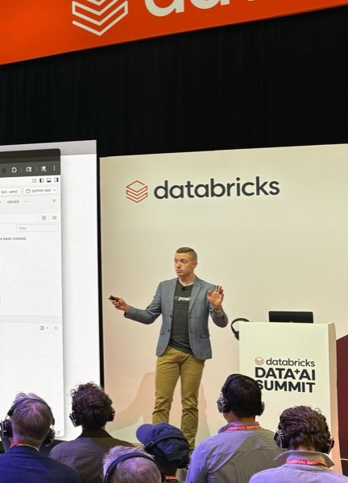
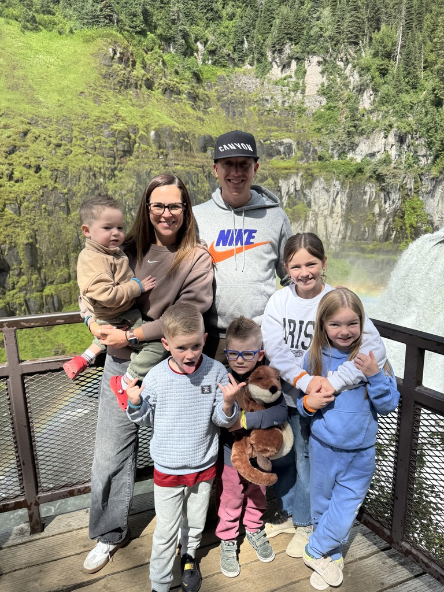
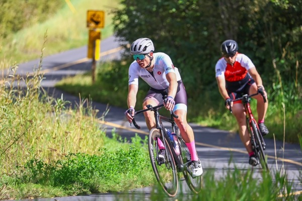
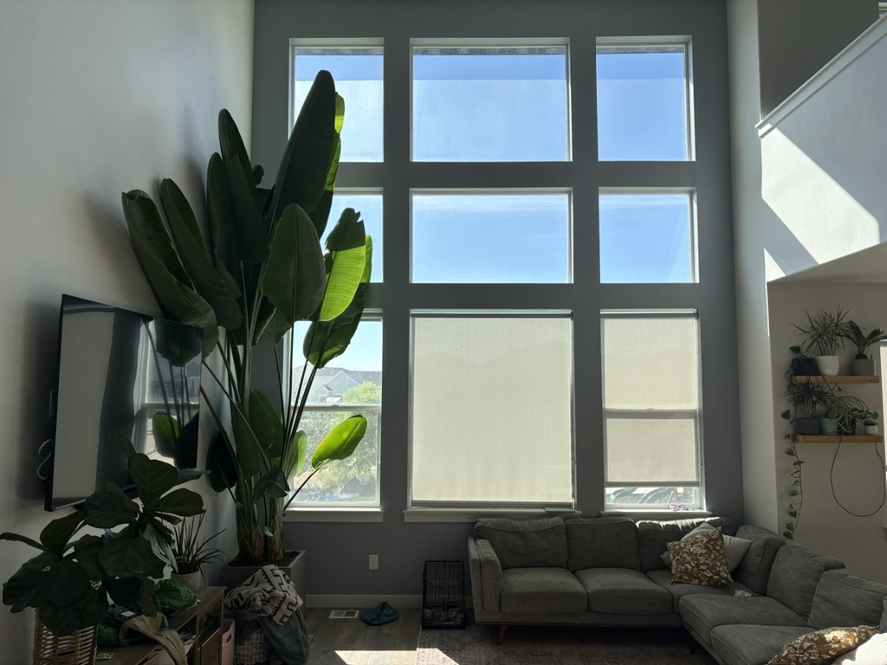

A path with detours
It took a few turns to find statistics.
Those turns taught me to stay curious, listen closely, and keep looking for the questions that matter.
- Pre-animationBYU
- ServiceLDS Mission
Sacramento, California - PsychologyReturned to BYU and changed majors
- StatisticsMajor with a Psychology minor
- Data scienceMaster’s · University of the Pacific
What I do
I help teams use data and AI to do their best work.
At Posit, PBC, I help build tools that support open-source scientific research, data science, and technical communication.

My favorite people
Meet my family.
I live in Eagle Mountain with my wife, Brittany, and our five kids. Life moves a million miles a minute, but we love it and do our best to live and love intentionally.

Beyond the desk
I recharge by getting outside.
I love riding bikes, exploring new places with Brittany, and making topographic art at Landform Labs. A good view changes the way I think.

Fun facts
A few things you probably wouldn’t guess.
- I have a 17-foot-tall bird-of-paradise plant named Fred in my living room.
- I can’t burp.
- My favorite food is black pepper.

Why I teach
In a world that is constantly trying to act upon us, learning enables us to truly act for ourselves. Learning increases agency.
How we’ll work together
Keep an open mind and stay curious.
“I don’t want statistics to be your favorite subject, but I want to be your favorite teacher.”— My daughter
I know that statistics won’t be everyone’s favorite subject (but it should). I also know you can all succeed in this course and learn things along the way that will bless you throughout your life.
- Try things
Learning is an active sport.
- Ask early
Questions help everyone learn.
- Help each other
We’re building a class where we all contribute together.